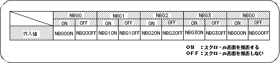

Return to previous page | Return to menu | Go to next page
● Drawing declaration
In SGL, when the library function “slTVOn” is executed, the drawing process on the monitor of the scroll screen is started for the first time.
After that, the scroll surface continues to draw the scroll screen in sync with the scan line according to the stored scroll information (position, scale, rotation angle, graphic data, etc.).
The function “slTVOff” is paired with this function “slTVOn”. This is to cancel the scroll drawing process.
● Draw Settings
Set whether to draw the scroll plane with the function settings on the monitor.
Scroll surfaces that have been registered for scrolling using the function “slScrAutoDisp” have their drawing settings turned on at the registration stage, so they are drawn as they are, but they are not drawn by turning them off It is also possible to. You can also draw a scroll surface once the drawing setting is turned off by turning on the drawing setting.

Note) The values in the above table are defined in “sl_def.h” included with the system.
● Screen synchronization (scroll rewriting)
The scroll drawing data is rewritten according to the scanning line status.